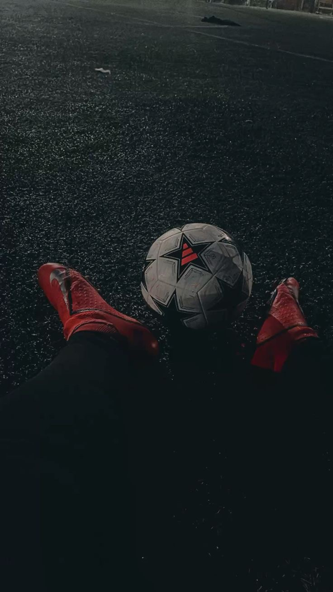

A football team typically includes:
• Goalkeeper: Defends the goal and can use hands in the penalty area.
• Defenders: Protect against attacks.
• Midfielders: Connect defense and attack, control game rhythm.
• Forwards/Strikers: Main goal scorers.

